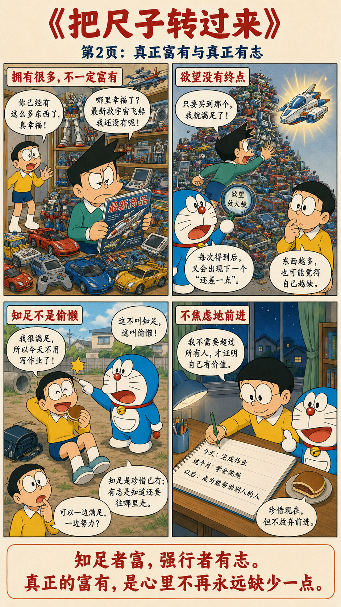
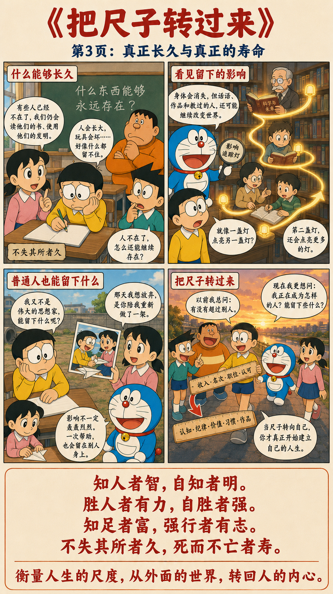

老子重新定义了四件事
知人者智，自知者明。
胜人者有力，自胜者强。
知足者富，强行者有志。
不失其所者久，死而不亡者寿。
真正的尺度，都往里走了一层
能够了解别人，是聪明；能够真正了解自己，才是真正的明智。能够战胜别人，是有力量；能够战胜自己的弱点和欲望，才是真正的强大。
懂得满足的人，其实已经富有；能够坚持自己的目标不断前进的人，是真正有志向的人。不偏离自己的立身之本，才能长久；一个人虽然去世，但他的精神、思想、事业仍然被人记住，这才是真正意义上的长寿。
把衡量人生的尺子，转回自己



你正在向外比较，还是向内建立？
拖动下面的方向。外部成绩当然重要，但如果所有判断都来自外部，一个人的标准就永远掌握在别人手里。
自知比知人更难
我们每天都在分析别人：导师怎么样、老板怎么样、同行怎么样、市场怎么样。但真正困难的是回答：我的优势是什么？短板是什么？我真正想追求什么？
很多人工作十几年，仍不知道自己真正适合什么。不是因为没有观察力，而是观察力一直朝外，没有照见自己。
最大的敌人，往往不是别人
“胜人者有力，自胜者强。”对现代人而言，需要战胜的常常不是竞争对手，而是拖延、虚荣、焦虑、害怕失败与急于求成。
真正拉开人与人差距的，常常不是一次智力较量，而是能否长久管理自己的情绪、习惯与注意力。
知足不是躺平
老子不是说不要奋斗。他只是指出：一个人的财富不仅取决于拥有多少，也取决于还想要多少。
假设两个人都年薪一百万元：一个总觉得还差一点才会幸福；另一个已经感到满足，同时继续认真工作。后者的幸福感没有完全交给外界，因此反而更富有。
真正长久的是价值
“死而不亡者寿。”人的生命终究有限，但思想、作品、制度，以及教育出来的人，可以继续存在。
对学术尤其如此。论文会过时，技术会更新；但如果你提出一种新的思想、一种新的方法，或者培养了一批优秀的人，影响便可能远远越过生命本身。
把人生的尺度拿回来
这一章的逻辑很统一：向外，我们追求比较、竞争与认可；向内，我们建立认知、纪律与价值。外部的胜负不断变化，内部形成的能力却可以成为一个人的底层。
人生最值得投入的竞争，不是不断压过别人，而是不断胜过昨天那个尚未看清自己的我。